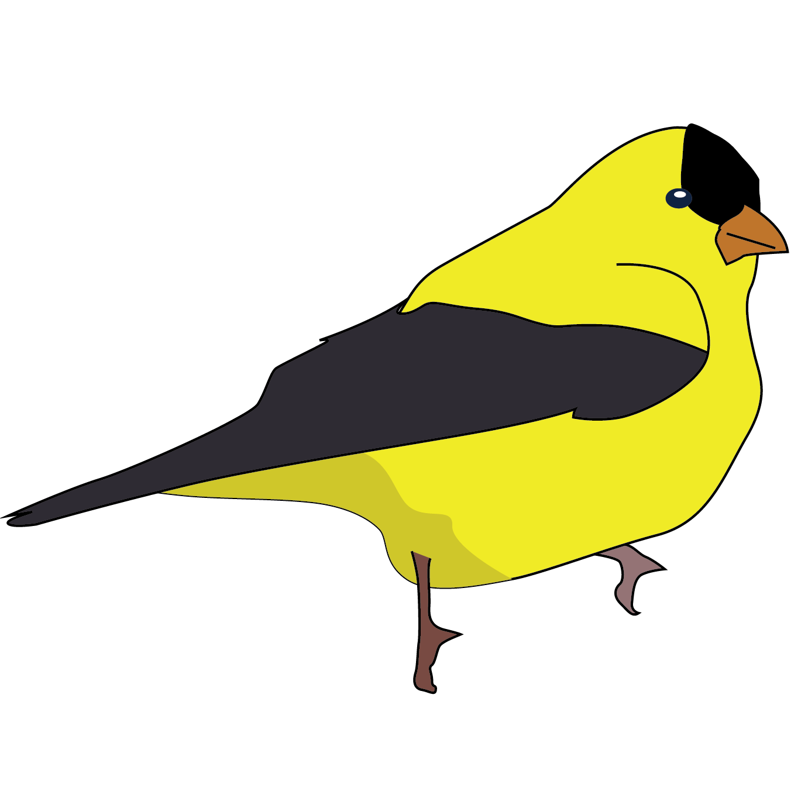
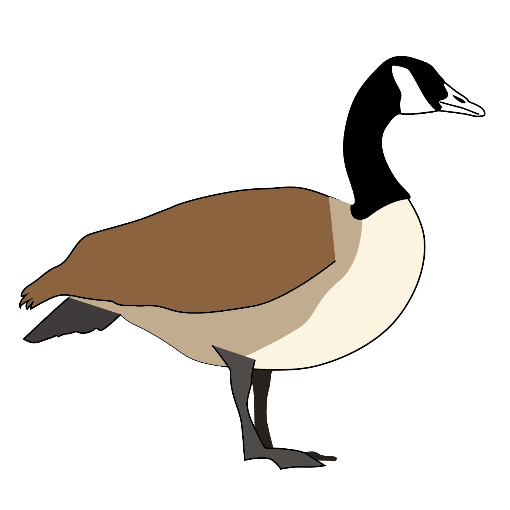
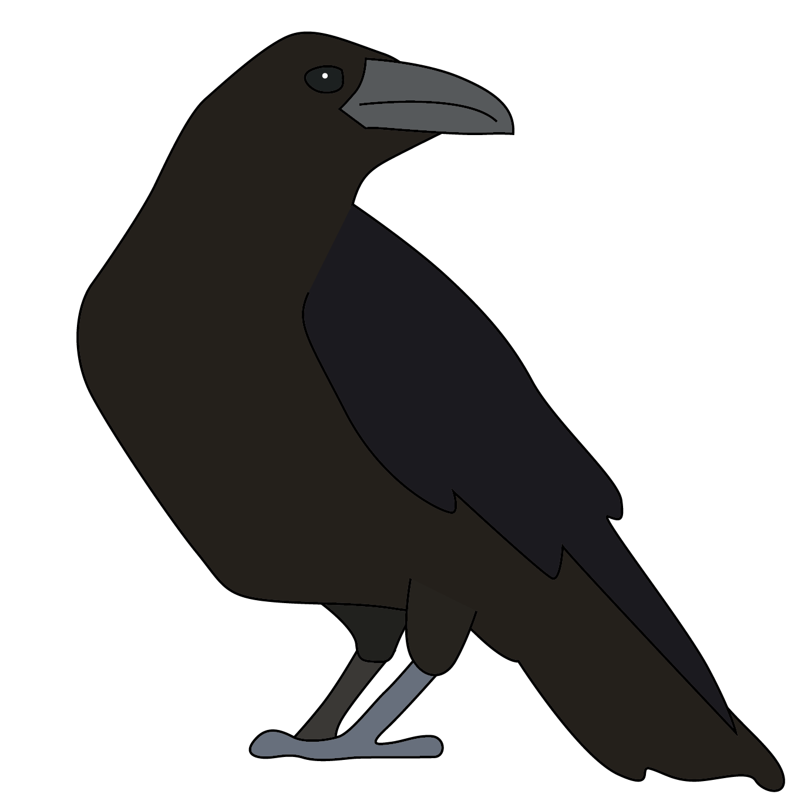
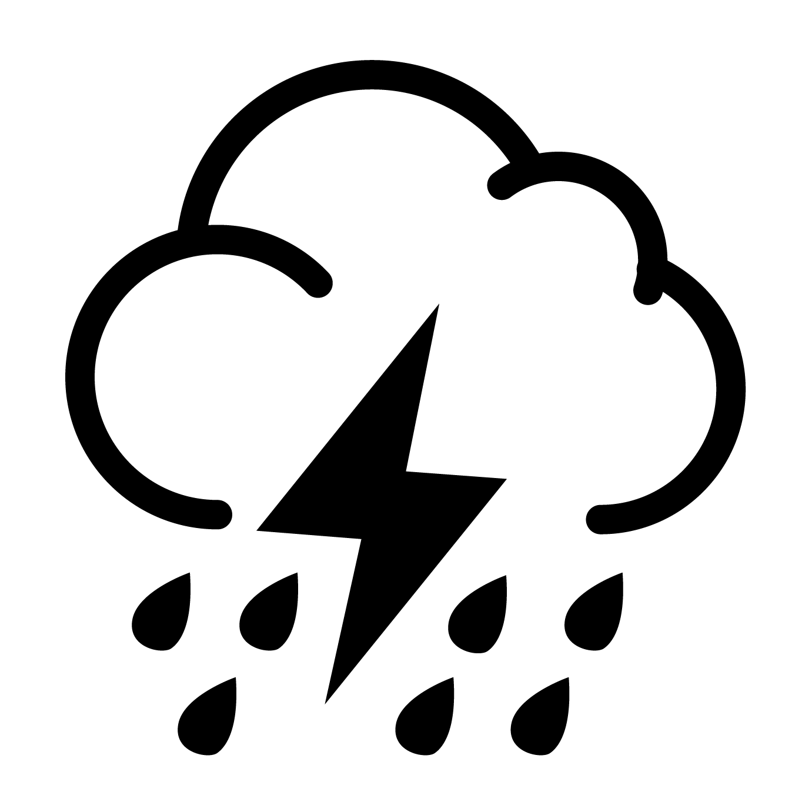

logo
Soundboard
The drop-zones
The Drop Zones
Animal Icons
Animals of Grey County


 =======
=======
The Drag Zone
  The Drag Zone

Welcome to the beautiful walking trails of Grey County, Ontario. Even while at home in the city, at your work desk, or even just on vacation elsewhere in the world, Grey County has a sound like no other.
In order to make you feel at home wherever you go, simply choose a time of day from the center panel to display the various animals that one might find. Drag one of the animal icons to reveal the elaborate colours and make the calls play through.
Everyone knows that no outdoor experience is complete without random weather changes! By dragging a weather icon from the right panel onto the top right dropzone, you overlay the animal sounds with general ambience of a thunderstorm, high wind, rain, or you can stick with calm weather.
The choices are yours in the Grey County soundboard. Yours to discover.